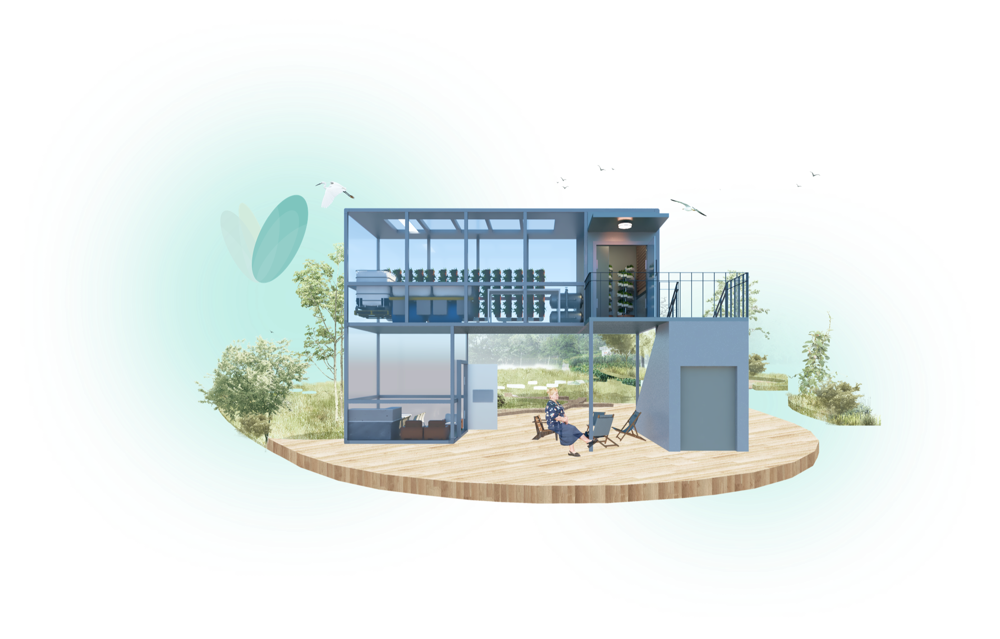

Yiming Guo
I’m a multidisciplinary designer working across service systems, cultural experiences and participatory tools, turning research into warm, practical ways for people to navigate change.
Selected Work
Four case studies 02
Co-Re for Church
Heritage retrofit, systems thinking, toolkit design
→
02
Co-Re for Church
Heritage retrofit, systems thinking, toolkit design
→
 03
Green Partner
Older migrants, community wellbeing, service strategy
→
03
Green Partner
Older migrants, community wellbeing, service strategy
→

04 The Breath of Culture Cultural experience, event curation, heritage learning →
Design Approach
Click each phaseAvoid designing busywork.
About
I design with people, context and care.
I’m a multidisciplinary designer whose practice moves between research, service strategy, cultural programming and experience design, with a particular interest in how people adapt to new environments, rebuild belonging and make decisions inside complex systems.
Across my projects, I use interviews, observation, systems mapping, prototyping and participatory formats to turn social insight into tangible touchpoints, from games and toolkits to spatial services and public cultural events.